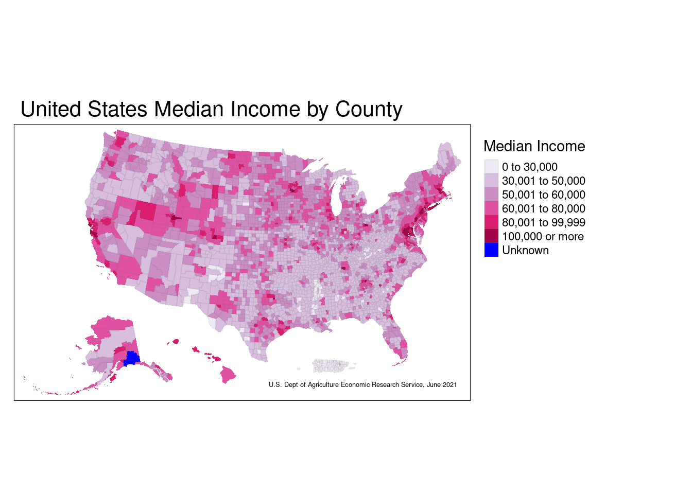
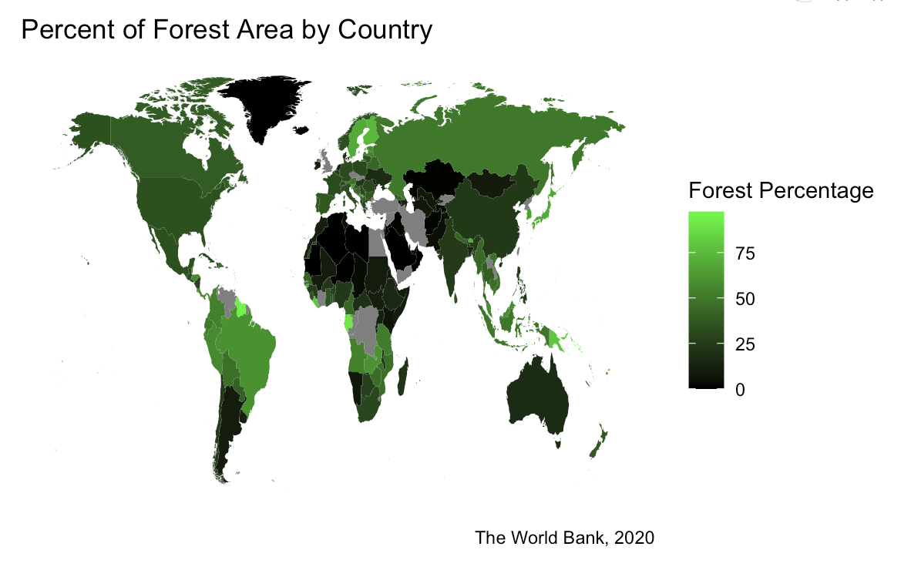
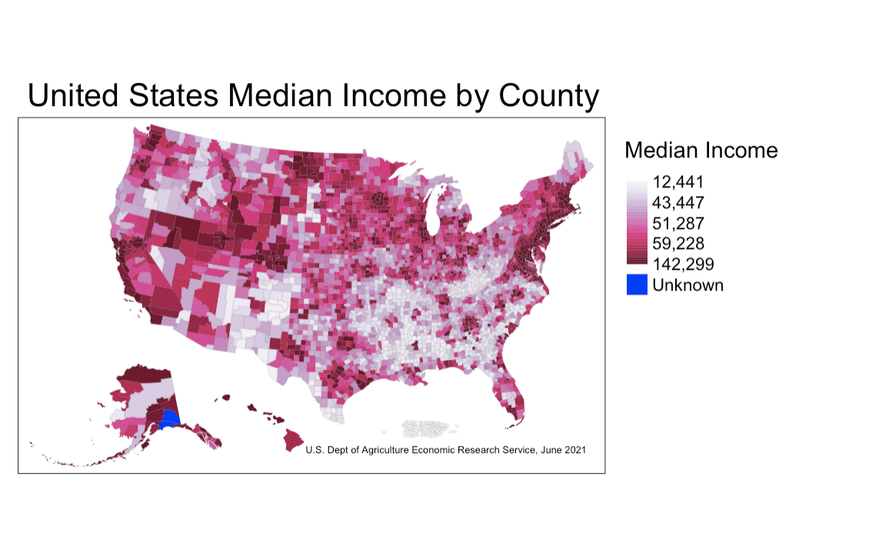
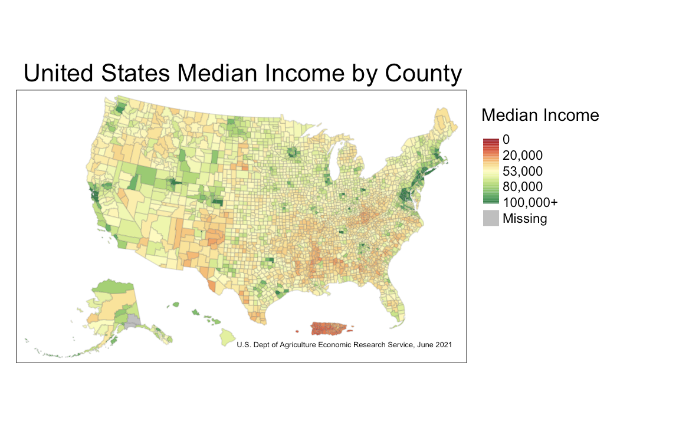

Completed: Spring 2023
Creating Choropleth Maps in R
Part 1:
Assignment: Map a continuous variable that is distributed geographically using any data of your choosing without it being simply a map of population density.
For my first continuous variable to be distributed geographically, I am using a dataset containing the median income for each U.S. county, as of June 2021.
The next step was cleaning the data, which for this particular step consisted of changing around the variable types, joining the data to a generic county dataset, etc.
Now to see the actual map of the data:
Themes/Remarks
From this graph, it can be concluded that a very common income range for U.S. counties is somewhere between $30,000-$60,000. Naturally, the median income by county is very highly linked to the cost of living for that area. The bible belt is especially interesting to see, as the majority of counties from the state of Kentucky downwards all have a similar range of median income. It’s also interesting, yet unsurprising, that the wealthier New England region and San Francisco area tend to have higher overall incomes.
This map most effectively communicates not just the data it represents, but also the cost of living across the country, the general trend of population density by county, and even why certain areas of the U.S. swing to one side or another politically.
This data is from June 2021, so it would be especially interesting to compare this to mapping of median income by county from a few decades ago to see how the cost of living as a whole has entirely changed.
Part 2:
Assignment: Map another continuous variable that is distributed geographically using new data and a new map.
Going in a different direction, my second continuous variable to be mapped is the percentage of forest area in each country across the world.
The link to the data containing the trend for global forest percentage as well as the download link to the csv file can be found here.
New names:
Rows: 266 Columns: 67
── Column specification
──────────────────────────────────────────────────────── Delimiter: "," chr
(4): Country Name, Country Code, Indicator Name, Indicator Code dbl (31): 1990,
1991, 1992, 1993, 1994, 1995, 1996, 1997, 1998, 1999, 2000, ... lgl (32): 1960,
1961, 1962, 1963, 1964, 1965, 1966, 1967, 1968, 1969, 1970, ...
ℹ Use `spec()` to retrieve the full column specification for this data. ℹ
Specify the column types or set `show_col_types = FALSE` to quiet this message.
• `` -> `...67`# A tibble: 266 × 67
Country N…¹ Count…² Indic…³ Indic…⁴ `1960` `1961` `1962` `1963` `1964` `1965`
<chr> <chr> <chr> <chr> <lgl> <lgl> <lgl> <lgl> <lgl> <lgl>
1 Aruba ABW Forest… AG.LND… NA NA NA NA NA NA
2 Africa Eas… AFE Forest… AG.LND… NA NA NA NA NA NA
3 Afghanistan AFG Forest… AG.LND… NA NA NA NA NA NA
4 Africa Wes… AFW Forest… AG.LND… NA NA NA NA NA NA
5 Angola AGO Forest… AG.LND… NA NA NA NA NA NA
6 Albania ALB Forest… AG.LND… NA NA NA NA NA NA
7 Andorra AND Forest… AG.LND… NA NA NA NA NA NA
8 Arab World ARB Forest… AG.LND… NA NA NA NA NA NA
9 United Ara… ARE Forest… AG.LND… NA NA NA NA NA NA
10 Argentina ARG Forest… AG.LND… NA NA NA NA NA NA
# … with 256 more rows, 57 more variables: `1966` <lgl>, `1967` <lgl>,
# `1968` <lgl>, `1969` <lgl>, `1970` <lgl>, `1971` <lgl>, `1972` <lgl>,
# `1973` <lgl>, `1974` <lgl>, `1975` <lgl>, `1976` <lgl>, `1977` <lgl>,
# `1978` <lgl>, `1979` <lgl>, `1980` <lgl>, `1981` <lgl>, `1982` <lgl>,
# `1983` <lgl>, `1984` <lgl>, `1985` <lgl>, `1986` <lgl>, `1987` <lgl>,
# `1988` <lgl>, `1989` <lgl>, `1990` <dbl>, `1991` <dbl>, `1992` <dbl>,
# `1993` <dbl>, `1994` <dbl>, `1995` <dbl>, `1996` <dbl>, `1997` <dbl>, …Again, cleaning the data; this time was a little more complicated, as the country names in the csv file didn’t match many of those in the base dataset.
[1] "data.frame"Now mapping the data:
legend_title <- 'Forest Percentage'
HIDDEN_MAP <-
ggplot() +
geom_polygon(data = forestmapdata,
aes(x = long, y = lat, group = group,
fill = present)) +
scale_fill_continuous(legend_title,
low = 'black',
high = 'green') +
labs(title = 'Percent of Forest Area by Country',
caption = 'The World Bank, 2020') +
theme(panel.background = element_blank(),
axis.text = element_blank(),
axis.title = element_blank(),
axis.ticks = element_blank())
Themes/Remarks
This map represents the 2020 data regarding the percentage of each country that is covered by forest. The dataset I used actually has some interesting trends to see when it comes to the decades before 2020, and to re-graph each country based on their percentages from many years ago would show that forest area is declining globally.
From this graph alone, however, you can see that denser forest areas normally reside in places that are less populated. It also makes sense that areas like the Saharan Desert, the icecap that is Greenland, and the densely populated middle east have the biggest areas with the lowest forest percentage.
It may be more interesting to those concerned with bigger countries like the U.S. or Russia to have the country broken down into different regions instead of taking the average of a large area of land with a vast range of geography and terrain.
However, this map communicates a very easy to understand and reasonable description of the general areas of the world with the most forest area.
Part 3:
a.) Assignment: Using a map you’ve already created, switch the scaling of the variable you were previously using.
Modifying the first map of incomes in the U.S., I’ll switch from a classed scale to a gradient scale, so the output looks like this:

Remarks:
This data is mapped using a gradient scale rather than a classed scale, and the gradient scale is determined by the data itself, having built-in breaks where the lowest and highest incomes in the dataset are. Because of the breaks, this map does well in communicating the most common incomes for the country as a whole simply by looking at just the legend. However, the differentiation between an income of 60,000 and 140,000 is substantial, and only a small gradient separates these two values (and the same goes for an income of 12,000 compared to 43,000). For this reason, I think the classed scale is the best option to map this data.
b.) Assignment: Again using a map you’ve already created, switch the scale from sequential to divergent.
Since my first mapping of this graph used a sequential scale, I’ll switch it now to be on a divergent scale.
First, I want to find the true average of U.S. incomes in the dataset in order to have a meaningful midpoint within the divergent scale.
mean(joined_income_data$Median_HH_Inc_ACS, na.rm=TRUE)The average income in the U.S. according to this dataset is $52,640, so I’ll round the midpoint in the diverging scale to $53,000 in order to better comprehend which counties have a median income greater than and less than the true average of the dataset.

Remarks:
I actually find that mapping the median income of U.S. counties on a diverging scale is more meaningful when it comes to seeing which counties are below the poverty line and which are way above it. That being said, because I was using just the median income of this dataset and not a value that draws the line for what income is considered in poverty and what is not, it’s not necessarily correct to conclude that those below the midpoint in the diverging scale are in poverty.
However, it still maps which counties are making less or more than the median U.S. income, and this information is still extremely valuable, especially when it’s mapped across the entire country.